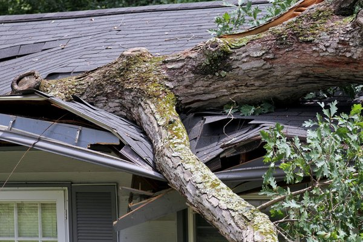
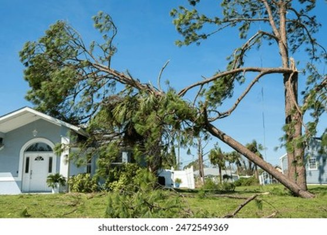

July 23, 2026
Auto Insurance Rate Hike Denver 2026
I got my auto insurance renewal last month and I actually called my agent to confirm it was correct. $2,180 for six months. That is $363 a month. For ...
Real stories, real numbers, no fluff. Written by a former senior underwriter.
I got my auto insurance renewal last month and I actually called my agent to confirm it was correct. $2,180 for six months. That is $363 a month. For ...

Why My Home Insurance Claim Got Denied After the Chicago Heat Dome—And What I Did About It Marcus Whitfield The adjuster looked at my basement and sai...

The deer came out of nowhere. One second I was driving home from a late shift at the hospital, cruising down I-70 at 65 mph, singing along to a song I...
The Renter's Insurance Claim That Taught Me Everything About Coverage Gaps I was on the Kennedy Expressway when my phone rang. It was a Tuesday in Mar...
The Widow, Two Kids, and a Policy That Paid Nothing I was reviewing files in my home office when my phone rang. It was a Tuesday afternoon, the kind o...

What the Claims Adjuster Didn't Tell Me After My Car Accident I learned this lesson on a rainy Tuesday night on the Kennedy Expressway. I was drivin....

The Year I Almost Became a Statistic (And Why I Left Underwriting) You’d think someone who priced life insurance for a...

The Self-Employed Guitar Teacher Who Didn't Think He Needed Disability I hear that at least once a month. Usually from a self-employed person – a con...

The Reinsurance Market Is Tightening: Your Home Insurance Premium Will Reflect It I was on a call last month with a former colleague who still w...

The 10-Minute Disability Insurance Checkup for Freelancers and 9-to-5ers That’s the question I start every disability checkup with. Most people sta.....

The $50,000 Surgery That Cost Me $200 Thanks to a PPO I still have that statement in a file folder. Not because I’m proud of the number – though I...

Replacement Cost vs. Market Value: The $100,000 Home Insurance Mistake I ask this question at every home insurance revie...

NAIC AI Transparency Law: What It Means for Your Auto Insurance Rate I was at a cookout last summer. My neighbor...

Medicare Advantage Network Restrictions: What Illinois Seniors Need to Know I got a cal...

Life Insurance Needs Estimator: Why One Times Salary Is a Lie I see this every wee...

Insurance Deserts: Why Your Zip Code Matters More Than Your Driving Record...
Illinois Homeowners Insurance Rates Are Up 22% in 2026: Here's Why I opened that renewal notice on a Tuesday morning, coff...

How to Use the Auto Coverage Optimizer to Stop Overpaying I’ve run this for hundreds of people. And nine times out of ten, they’re p...

How to Read a Health Insurance Summary of Benefits Without Losing Your Mind That’s not false modesty. A few years ago, I was helping my...
How to Optimize Your Auto Coverage Based on Your Car's Actual Value I say this at least three times a week. Someone calls me, angry about thei...

How to Find Your Insurance Coverage Gaps in 20 Minutes I don’t blame you. I used to write those policies for a living, and even I don’t rea...
How to Appeal a Homeowners Insurance Claim Denial: Step by Step I learned that number from a claims adjuster I used...

How We Almost Lost Our House to a Flood That Wasn't Covered I remember exactly where I was standing. Kitchen. Wednesday evening. A pan of...

Health Plan Comparator: How to Compare Three Plans Side by Side Open enrollment starts next week. You have three options. How do you choose? I get t....

#26 Employer Health Plan vs. Marketplace: Which One Saves You More? “Your employer says they cover 80% of premiums. But are you actually saving money?...

#25 Embedded Insurance: The $5/month ‘Protection’ You Don’t Need “Add phone protection for only $7.99? No thanks.” I clicked “no” so fast my finger a...

Disability Coverage: Are You One Injury Away From Financial Ruin? I ask this question at every financial checkup. Most peop...

Cyber Insurance for Families: Do You Really Need It? I was on a panel last year about emerging insurance risks. Someone from the...

Climate Risk Modeling and Your Home Insurance: The New Reality I got an email from a client in Des Plaines – let’s call her Mrs. Chen. She’d lived in...

Chicago Flood Zone Remapping: How to Know If You're at Risk I found out because my neighbor got a l...

AI Underwriting Algorithms: Why You Might Be Paying More for No Reason I hear this question at least once a week. Someone pulls into my virtual offic...

A Widow, Two Kids, and a Policy That Paid Nothing I was reviewing files in my home office when my phone rang....